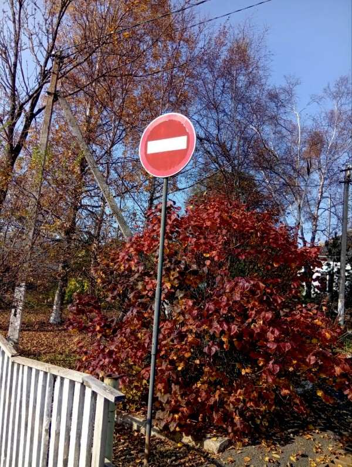

Доброго времени суток, путник. Давно я ничего сюда не писал, честно сказать, порой тяжело сесть и начать структурировать тот клубок всякого мысленого хлама, что ежедневно ворочаешь в своей голове. Бывает ухватишься за мысль и тут же уходишь в абсолютно противоположную. Тем не мение структурировать нужно да и просто почему бы не раскзать о чем-нибудь? Так я подумал и решил просто поделиться мнением об осени.
Я считаю осень, наверное самым лучшим временем года. Порой я удивляюсь что для людей часто желаемым являеться лето. Думаю, что на это причины скорее связанные с отпусками и каникулами, что берут учащиеся. Но, так сложилось, что меня эти прелести обошли стороной. Я в принцыпе не очень люблю лето. Летом жарко, из-за чего не получаеться одеться в мешковатую одежду(не говоря о доспехе), да и летом будт оочень однобразно вокруг, вся эта зелень очень утомляет, только изредка можно наткнуться глазом на цветы, которые будут контрастировать с зеленым полотном. Осень же в этом плане, как мне кажется, намного красивее. Осенью (ближе к сердине) намного контрастнее, деревья выглядят более весело, чтоль, опадают листья и ласково шуршат под ногами. Кстати, заметил недавно, что березы очень красиво контрастируют на фоне опавших лисьев. До этого, они мне н еочень нравились. И осенью прохладнее, как раз на стлько чтобы чувствовать себя хорошо, и воздух будто более свежий(или просто прохладный). Не знаю как у других людей, но часто прохладным утром, в воздухе витает легкий запах сгоревшего ушля, незнаю почему, но мне это нравится.
Кстати, в начале осени летает много стрекоз, это тоже очень мило, стрекозы очень необычные, насколько я знаю, в концу лета они вылупляються и поэтому их так много ну и ,вроде, некоторые из них мигрируют. В общем осень это хорошо, упасть бы в листья и раствориться.

На этом мой небольшой манифест осени, закончен. Порой я сам не понимаю, что я и кто я, поэтому, для меня становятся открытием мои темлые эмоции к чему либо. Спасибо, за прочтение.